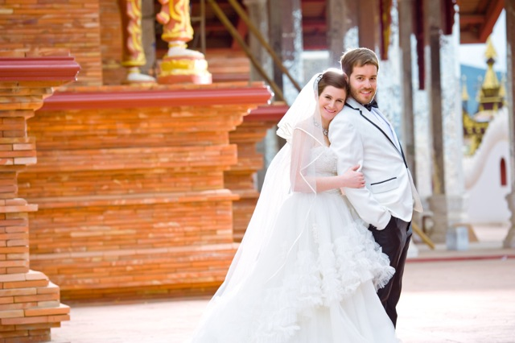

Friends & Family, welcome to our wedding website. We are excited to celebrate our marriage with you. Over the last decade, we have lived all over the world (mostly independent of each other), including Minneapolis, Lexington, Colorado, Shanghai, London, Washington D.C., Seattle, Taipei, Singapore and Beijing. Because of our work and travels, friends are dispersed across continents. This inspired us to do a wedding closer to our most recent home - Asia - and wedding receptions where we grew up -- Minnesota and Kentucky. We are looking forward to celebrating with you!
Click on the links to the left to find information about the event you plan to attend, whether it is in Thailand, Minnesota or Kentucky. Each location includes information about the schedule of events and hotel information.
Please also peruse the photo book; it includes photos from the first night we met up through our current trip.
This isn't exactly what our wedding will look like (in fact, this was a joke engagement photo session in China, but it turned out great), but you get the idea:
